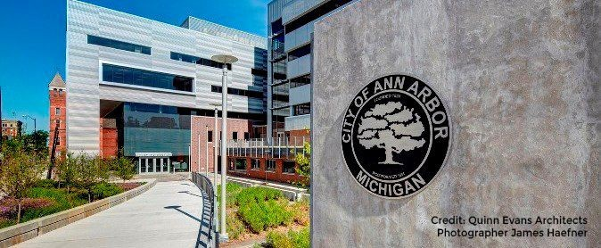

← Back to Projects Page
SI 350: UX Field Research in the Public Sector
University of Michigan 2019, School of Information
Promoting Resiliency and Sustainability within the City of Ann Arbor
Project Overview
Research how Ann Arbor residents define resiliency and how they respond to obstacles in order of designing
methods to help the City of Ann Arbor better support its residents in the face of future disturbances
So I worked in a three-week intensive program that focused on devising solutions that meet the following research goals:
- To find out how the residents defined resilience
- To understand how their community engagement supports resilience in their neighborhood
Duration of project: 3 weeks
My role:
- UX Research
- UX Design
- Copywriters
- Visual Designers
Understanding user perspective
Working with the city in Ann Arbor, we assessed users needs after conducting formal interviews, creating personas and developing affinity diagrams
After completing the course, a group of 3 other students and myself created a final report, presentation and a variety of other usability testing methods to gather research and gain insight into residents' perspectives. These methods include:
- Personas
- User Interviews
- Affinity Diagrams
- Matrices
- Photo Collaging
During the research process, we made personas that helped us anchor user perspective without letting our ideas for features overtake user needs and expectations